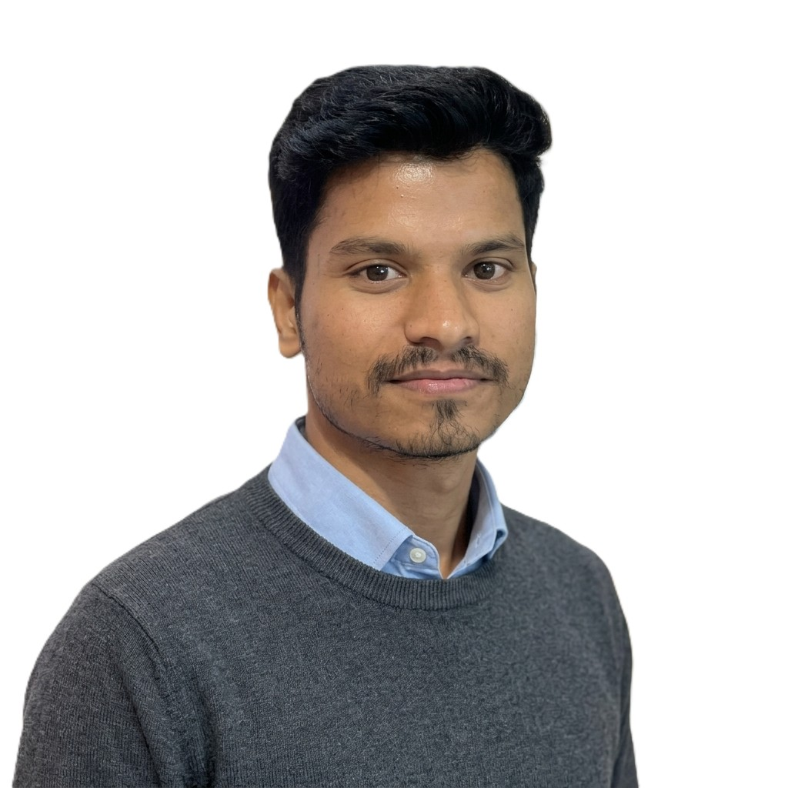
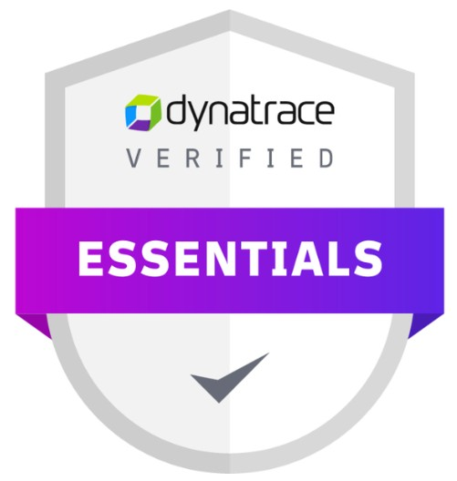

Suryakanta Behera
SDET and QA Automation Engineer, Hyderabad
I have 5 years of experience testing banking and manufacturing software. I build test automation with Playwright and TypeScript, and with Tricentis Tosca for enterprise systems. I also test APIs, databases and batch jobs, and I use logs and monitoring to find the root cause of defects.

Experience
Technology Analyst, Infosys Limited
- Designed and built automation frameworks for REST APIs, backend services and web applications, covering functional, regression, integration, smoke and performance testing.
- Worked across every phase of the STLC in Agile teams: requirement analysis, test planning, estimation, test design, execution and defect management in JIRA.
- Wrote test cases, scripts and result documentation so that test runs are clear and repeatable.
- Worked with developers, database engineers and infrastructure engineers to keep delivery on track.
- Added GitHub Copilot to daily QA work, which cut the time spent on automation scripting and manual test case creation.
- Upskilling in the quality engineering layers of Infosys Topaz Fabric to prepare for AI-driven application testing.
Projects
Global Data Exchange
- Led the automation strategy and cut regression cycle time by 60% with Tosca end-to-end automation.
- Managed test cases and the traceability matrix in qTest, improving transparency and auditability by 50%.
- Brought in a shift-left approach with early API testing in Postman to catch defects sooner.
- Acted as the single point of contact for quality status and risk reporting across Development and Product teams.
Gateway for Salesforce
- Led the QA team and coordinated with onsite members to keep execution smooth and quality high.
- Kept data consistent across 3 internal applications.
- Ran regression and functional tests, including testing in the production environment for safe deployments.
Data Movement
- Wrote and ran ETL test plans, cases and scripts for data integrity and accuracy, with a 50% increase in productivity.
- Found and fixed data issues through root cause analysis and corrective actions.
- Automated data validation and transformation checks with SQL and Shell Script, cutting test execution time by 40%.
- Tested API endpoints, parameters and responses with Bruno.
Skills
Test automation
Playwright, TypeScript, Tricentis Tosca. Web UI, functional and regression automation, including Salesforce testing.
AI-assisted testing
GitHub Copilot, VS Code. Faster scripting and test case creation.
API testing
Postman, Bruno. REST validation, requests and responses, edge cases.
Databases
MySQL, PostgreSQL, Oracle. SQL queries, data integrity, post-deployment validation.
Performance testing
NeoLoad. Load and stress testing, bottleneck validation.
Observability
Splunk, Dynatrace. Log analysis, error tracing, root cause investigation, application monitoring.
Batch jobs
Control-M. Scheduling validation and failure scenario testing.
Test management
JIRA, Confluence, qTest, Shell Script. Defect lifecycle, test cycles, sprint tracking, documentation.
Recognition
- Rise Insta Award from Infosys Limited in 2022, 2023, 2024 and 2026 for exceptional performance.
- Commended by the client manager for consistently high-quality results and for managing complex tasks well.

Education
Bachelor of Technology, ITER, Siksha 'O' Anusandhan University, Bhubaneswar, Odisha (2020)